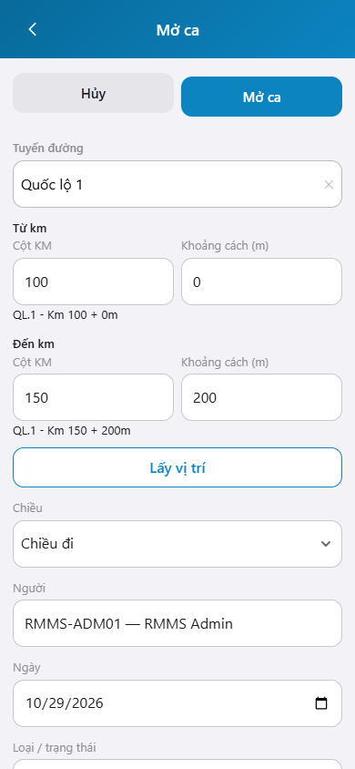
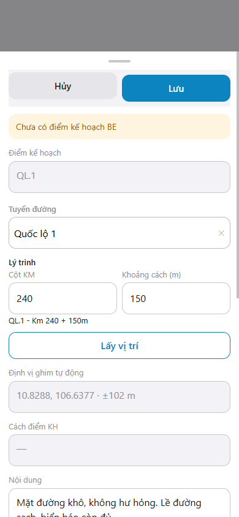
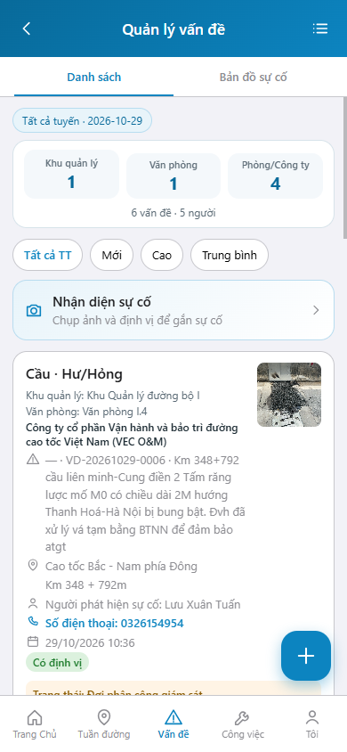
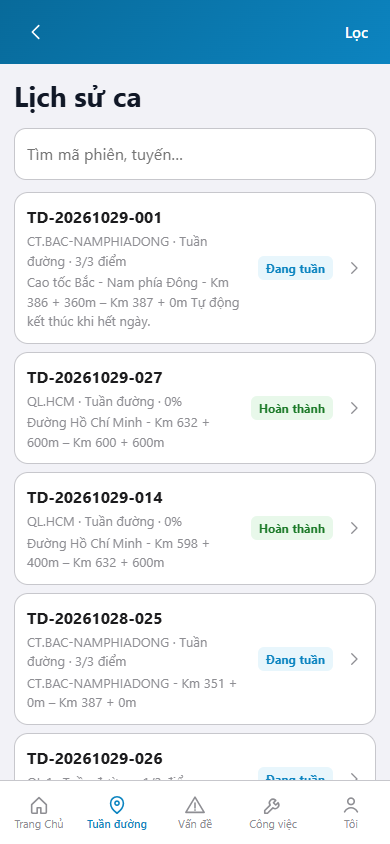
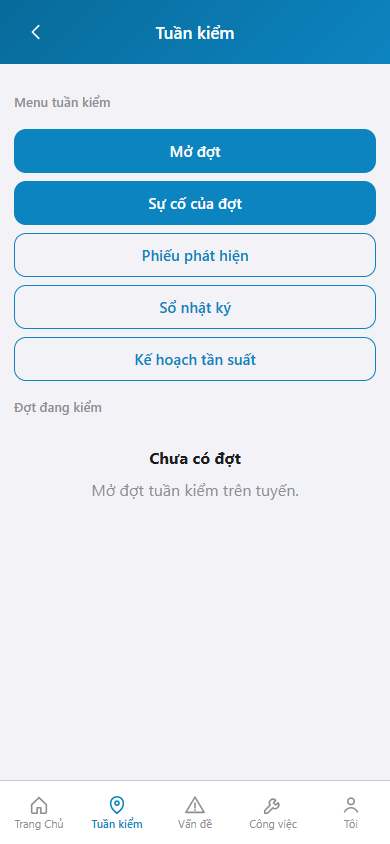
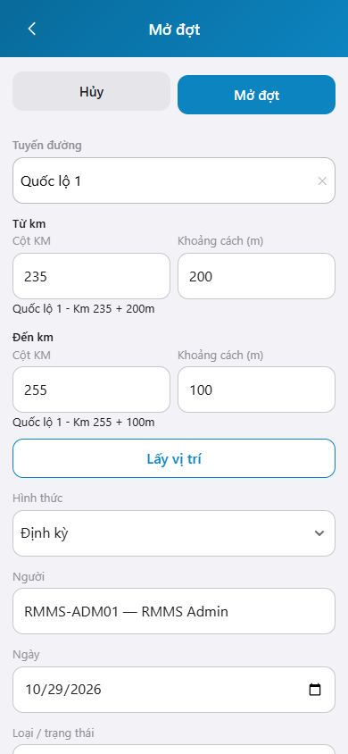
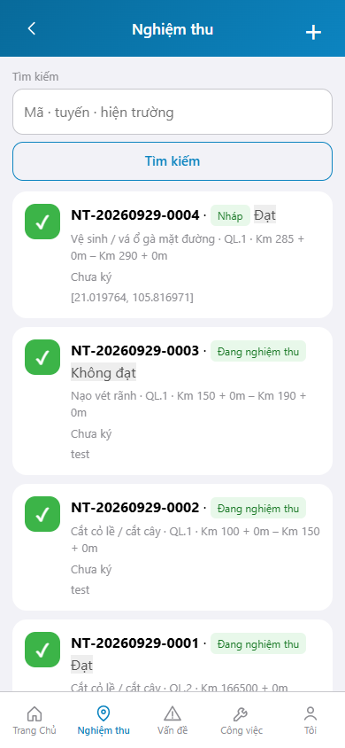
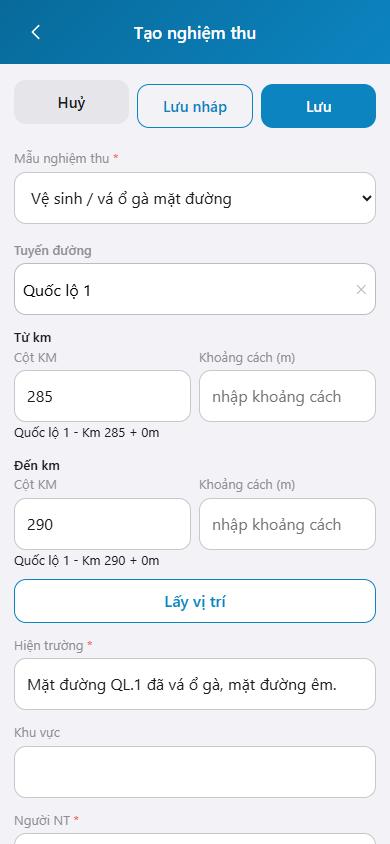

Chọn vai, rồi nhấn Xuất PDF. Trong hộp thoại in, chọn Lưu dưới dạng PDF. File chỉ gồm vai đang chọn.
Tuần đường
Nhân viên tuần đường tuần tra tuyến được giao, ghi điểm tuần, ghi sự cố và kết thúc ca. Khi cần biên bản vi phạm, ghi nhận vấn đề và đề nghị người có thẩm quyền lập biên bản.
Xác nhận tuyến
Lần vào ca, phần mềm có thể mở màn Xác nhận tuyến trước hub tuần đường.
Chọn Tuyến, nhập lý trình từ km và đến km.
Nhấn Thêm tuyến khi có thêm một đoạn.
Nhấn Xác nhận. Phiếu báo Phải có ít nhất 1 tuyến và lý trình. khi chưa đủ.
Ô Tôi là quản lý dùng khi tuyến không bắt buộc. Dòng gợi ý: Tuyến và lý trình không bắt buộc.
Mở ca
Hình 1. Ca đang tuần.
Phần này là tùy chọn. Hệ thống hỗ trợ tự mở ca khi có Ghi điểm tuần (check-in) và tự đóng ca khi hết ngày. Ca làm việc theo phân ca của người dùng.
Chọn mục Tuần đường.
Theo dõi tuyến, mã ca, nhân viên, số điểm tuần và độ phủ.
Trong mục Hôm nay, Đang tuần là ca chưa kết thúc. Xong là ca đã kết thúc.
Nút Mở ca chỉ hiện khi chưa có ca đang tuần.

Hình 2. Mở ca.
Chọn Tuyến đường.
Ở Từ km và Đến km, nhập Cột KM và Khoảng cách (m). Thiếu cột KM thì phiếu báo Nhập cột KM từ và đến trước khi mở ca.
Chọn Chiều: Chiều đi, Chiều về hoặc Hai chiều. Người hiện sẵn theo tài khoản.
Kiểm tra Ngày. Ô Loại / trạng thái ghi sẵn Tuần đường · Đang tuần.
Nhấn Mở ca. Nhấn Hủy nếu chưa mở. Khi đã có ca đang tuần, nút trên hub là Thêm ca.
Ghi điểm tuần

Hình 3. Ghi điểm tuần.
Trong ca đang tuần, nhấn Ghi điểm tuần.
Kiểm tra Điểm kế hoạch và Định vị ghim tự động.
Ở Lý trình, nhập Cột KM và Khoảng cách (m). Thiếu cột KM thì phiếu báo Nhập cột KM trước khi lưu.
Nhập Nội dung. Nhấn Chụp khi cần ảnh.
Nhấn Lưu hoặc Ghi nhận điểm tuần. Nhấn Hủy nếu không lưu.
Ghi nhận hư hỏng

Hình 4. Vấn đề sau khi ghi nhận.
Nhấn Ghi nhận hư hỏng khi phát hiện hư hỏng, mất mát hoặc xuống cấp.
Mở mục Vấn đề để theo dõi. Trạng thái gồm Đợi phân công giám sát và Đã đóng.
Chọn dòng để mở chi tiết. Nhấn Trao đổi để ghi nội dung xử lý.
Lịch sử và kết thúc ca

Hình 5. Lịch sử ca.
Nhấn Lịch sử phiên. Nhấn Lọc khi cần thu hẹp danh sách.
Chọn một dòng để xem chi tiết ca.
Khi hoàn thành tuần tra, mở chi tiết ca đang tuần và nhấn Kết thúc ca.
Tuần kiểm
Cán bộ tuần kiểm mở đợt trên đoạn được giao, đối chiếu sổ với ca tuần đường và xác nhận phiếu phát hiện. Việc xử lý đã được quản lý giao, kèm người nhận và hạn xử lý. Xác nhận của tuần kiểm nằm trên phiếu phát hiện.
Xác nhận tuyến
Lần vào đợt, phần mềm có thể mở màn Xác nhận tuyến.
Chọn Tuyến, nhập lý trình từ km và đến km. Nhấn Thêm tuyến khi có thêm đoạn.
Nhấn Xác nhận. Phiếu báo Phải có ít nhất 1 tuyến và lý trình. khi chưa đủ.
Mở đợt

Hình 1. Menu tuần kiểm.
Mở tab Tuần kiểm.
Trong Menu tuần kiểm, chọn Mở đợt, Sự cố của đợt, Phiếu phát hiện, Sổ nhật ký hoặc Kế hoạch tần suất.
Mục Đợt đang kiểm liệt kê đợt chưa kết thúc.

Hình 2. Mở đợt.
Nhấn Mở đợt.
Chọn Tuyến đường. Ở Từ km và Đến km, nhập Cột KM và Khoảng cách (m).
Thiếu cột KM thì phiếu báo Nhập cột KM từ và đến trước khi mở đợt.
Chọn Hình thức: Định kỳ hoặc Đột xuất. Đột xuất thì nhập Lý do đột xuất.
Nhấn Mở đợt. Nhấn Hủy nếu chưa mở.
Đối chiếu và xác nhận
Hình 3. Công việc sau khi quản lý giao.
Mở Sổ nhật ký. Mục Đối chiếu tuần đường chọn Khớp hoặc Lệch.
Mở Phiếu phát hiện. Ở Kiểm tra lại, chọn Kết luận Đạt hoặc Chưa đạt.
Nhập Ghi chú, nhấn Ghim vị trí hiện tại, gắn Ảnh kiểm tra.
Kết luận Đạt: nhấn Xác nhận đạt. Kết luận Chưa đạt: nhấn Ghi chưa đạt.
Thời hạn khắc phục
Quản lý ghi Hạn xử lý khi giao việc. Tuần kiểm lấy hạn này lúc Xác nhận đạt. Mốc theo Thông tư 41/2024, Phụ lục IV.
Hạng mục
Thời hạn
Vá ổ gà
3 ngày với đường cấp I, II. 5 ngày với đường cấp III đến VI.
Nứt dọc, nứt ngang, nứt mai rùa
7 ngày mùa mưa. 14 ngày mùa khô.
Lún lõm, sình lún vượt mức
10 ngày. Không tính ngày mưa, mặt đường ẩm không thi công được.
Vệ sinh mặt đường, chướng ngại mất an toàn
1 giờ nếu nguy hiểm. 7 ngày với trường hợp còn lại.
Nước đọng trên mặt đường
Không quá 24 giờ.
Biển báo cấm, biển hiệu lệnh
1 ngày sau khi phát hiện. Biển còn lại: 3 ngày.
Vạch sơn hư cục bộ
28 ngày.
Tồn tại phát hiện lúc nghiệm thu
Khắc phục tối đa 5 ngày kể từ văn bản yêu cầu. Tuần kiểm xác nhận kết quả khắc phục.
Quản lý
View Quản lý giao việc từ sự cố, ký sổ cuối tuần, xem giám sát và lập phiếu nghiệm thu hiện trường. Phiếu điện thoại ghi kết quả từng hạng mục.
Tìm phiếu

Hình 1. Danh sách phiếu.
Chọn ô Công tác nghiệm thu hoặc tab Nghiệm thu.
Nhập mã phiếu, tuyến hoặc hiện trường, rồi nhấn Tìm kiếm.
Chọn một phiếu để xem trạng thái, mẫu và tuyến.
Lập phiếu hiện trường

Hình 2. Tạo phiếu.
Nhấn Tạo nghiệm thu.
Chọn Mẫu nghiệm thu, Tuyến đường, Người NT và Thời điểm NT.
Ở Từ km và Đến km, nhập Cột KM và Khoảng cách (m). Nhập Hiện trường.
Với từng hạng mục, chọn Đạt, Không đạt hoặc Không áp dụng.